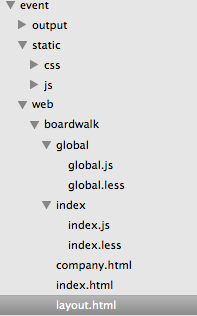
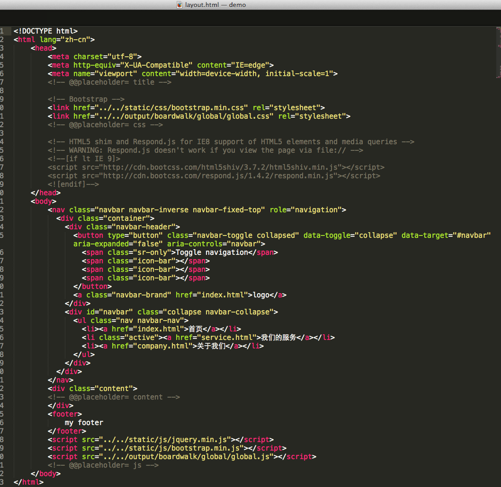
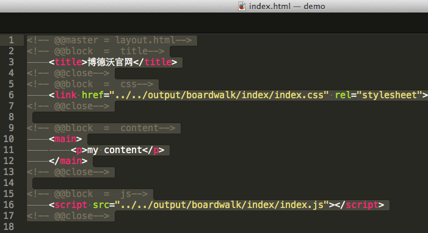

安装nodejs，全局安装gulp，项目安装gulp以及gulp插件，配置gulpfile.js，运行任务
全局安装gulp插件
npm install gulp -g
建立package.json （PS：json文件内是不能写注释的）
本地路径，
npm init
本地安装gulp插件
nom install gulp gulp-less gulp-uglify gulp-html-extend —save-dev //对less的输出，js的压缩，html的处理
全局安装gulp是为了执行gulp任务，本地安装gulp则是为了调用gulp插件功能
gulp.js
var gulp = require('gulp'),
less = require('gulp-less'),
uglify = require('gulp-uglify'),
htmlHelper = require('gulp-html-extend');
var dir = '../event/';
gulp.task('testLess', function() {
gulp.src(dir+'web/*/*/*.less')
.pipe(less())
.pipe(gulp.dest(dir+'output'));
console.log('done css');
})
gulp.task('minify-js', function() {
gulp.src(dir+'web/*/*/*.js')
.pipe(uglify())
.pipe(gulp.dest(dir+'output'));
})
gulp.task('testHtml', function() {
gulp.src(dir+'web/*/*.html').pipe(htmlHelper({
annotations:false,verbose:false
})).pipe(gulp.dest(dir+'output'))
})
gulp.task('default', function() {
gulp.run('testLess','minify-js','testHtml');
gulp.watch(dir+'web/*/*/*.less',['testLess'])
gulp.watch(dir+'web/*/*/*.js',['minify-js'])
gulp.watch(dir+'web/*/*.html',['testHtml'])
})
开发目录

layout.html //可以提取出公有部分

index.html

<返回